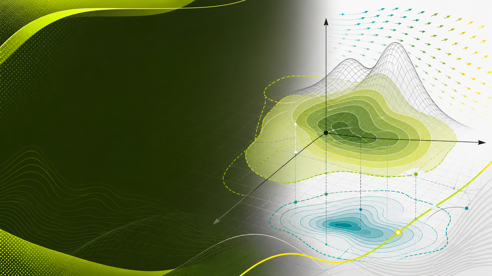
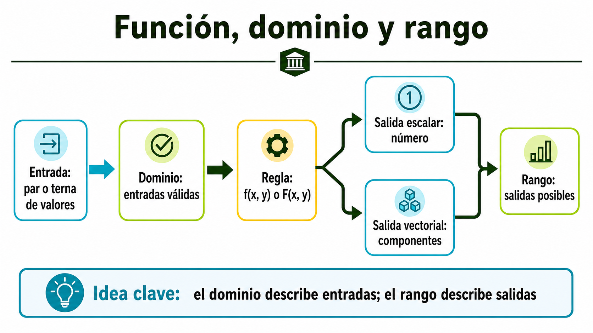
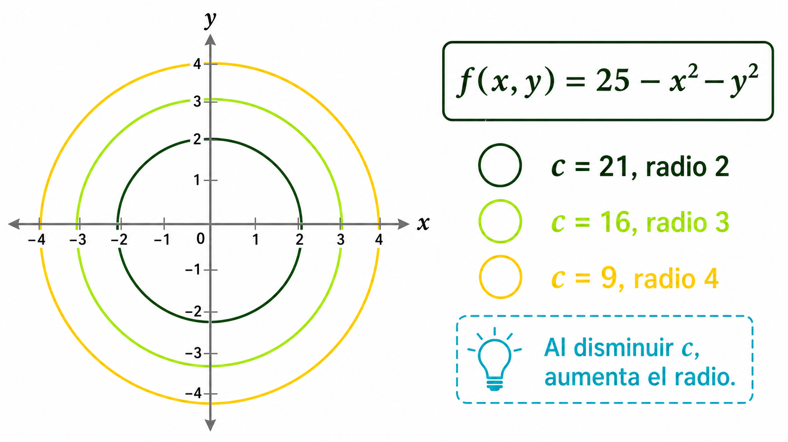
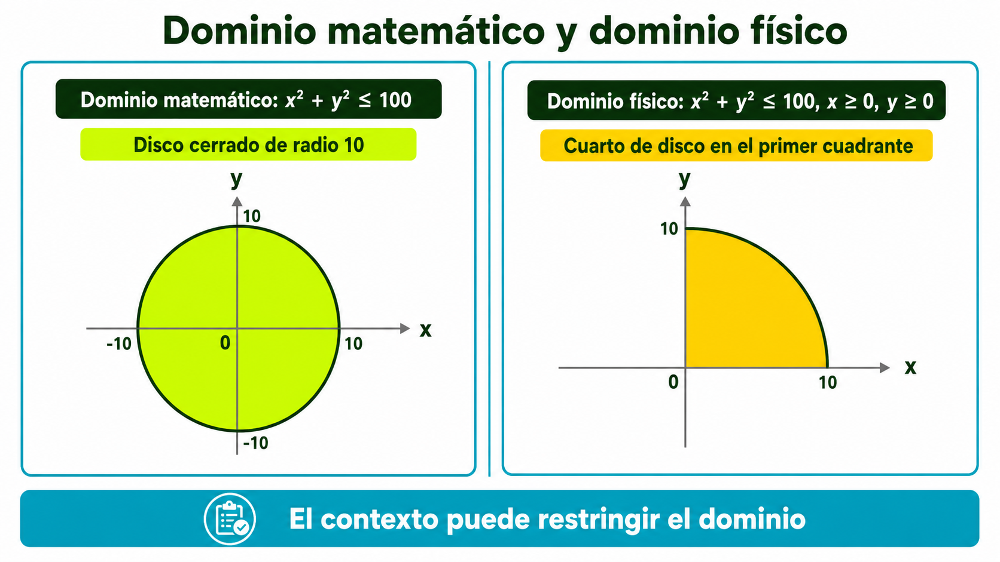
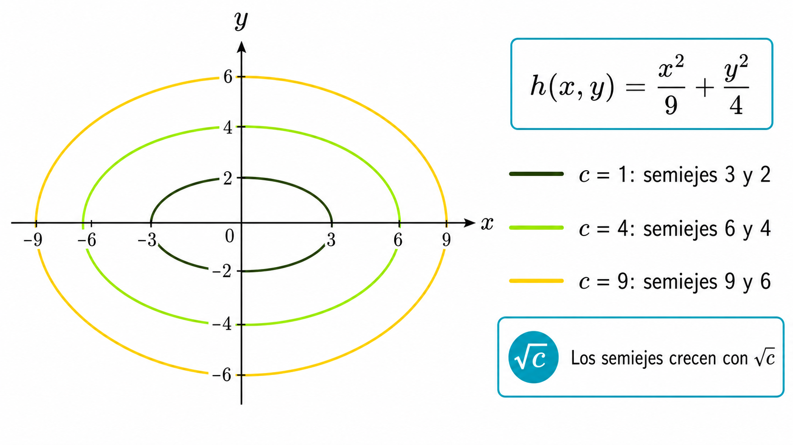

Distinguir funciones escalares y vectoriales a partir del tipo de salida, no solo por la cantidad de variables.

Contenido 01 · Análisis Vectorial
Funciones escalares y vectoriales en varias variables
Aprende a reconocer qué entra en una función, qué sale de ella, dónde tiene sentido evaluarla y cómo leer sus curvas de nivel antes de calcular.
Punto De Partida
Un equipo de ingeniería observa que una magnitud de interés varía según la ubicación en una región. Antes de calcular derivadas o integrales, necesita decidir qué variables describen la posición, qué puntos pertenecen al dominio, qué valores puede tomar la magnitud y cómo representar cambios mediante curvas de nivel.
Pregunta guía: ¿Cómo reconocer qué tipo de función describe un fenómeno espacial y qué información ofrecen su dominio, rango y curvas de nivel?
Lo Que Debes Lograr
Determinar dominio y rango considerando restricciones algebraicas, geométricas y de contexto.
Construir y leer curvas de nivel como conjuntos de puntos donde una función conserva un valor constante.
Mapa Visual Del Concepto
Usa esta infografía como referencia rápida: el dominio se refiere a entradas válidas; el rango se refiere a salidas posibles.

Estudia Los Conceptos
1. Función de varias variables
Una función de varias variables asigna una salida a cada punto de un conjunto de entradas. Si se escribe f(x, y), la entrada está formada por dos valores y la salida suele ser un número. Puede representar elevación, temperatura, presión aproximada o concentración en una región.
La notación no es decorativa: indica que el valor depende de variables independientes. Cuando una cambia y la otra permanece fija, la salida puede cambiar de manera distinta.
2. Función escalar y función vectorial
Una función escalar devuelve un número real. Por ejemplo, f(x, y) = x^2 + y^2 produce una magnitud no negativa para cada punto del plano.
Una función vectorial devuelve componentes. Por ejemplo, r(t) = (cos t, sen t, t) puede describir una trayectoria en el espacio.
La clasificación depende de la salida. Si la salida es un número, es escalar; si tiene componentes, es vectorial.
3. Dominio y rango
El dominio es el conjunto de entradas para las cuales la función está definida y tiene sentido. Puede limitarse por raíces pares, denominadores, logaritmos o condiciones físicas.
El rango es el conjunto de salidas posibles. La misma fórmula puede tener distinto rango si cambia el dominio.
4. Cónicas y curvas de nivel
Una curva de nivel aparece al fijar una función escalar en un valor constante: f(x, y) = c. Todos los puntos de esa curva comparten el mismo valor.
Las cónicas ayudan a reconocer formas: circunferencias, elipses, parábolas e hipérbolas pueden aparecer cuando se despejan las curvas de nivel.
Ejemplos Guiados
Ejemplo 1: clasificación básica
Enunciado: clasifica f(x, y) = x^2 + y^2 y r(t) = (cos t, sen t, t).
- f recibe dos variables y devuelve un número real. Es una función escalar.
- r recibe un parámetro y devuelve tres componentes. Es una función vectorial.
Resultado: f es escalar; r es vectorial.
Ejemplo 2: dominio con raíz cuadrada
Enunciado: determina el dominio de f(x, y) = sqrt(16 - x^2 - y^2).
- La raíz cuadrada exige que 16 - x^2 - y^2 >= 0.
- Entonces x^2 + y^2 <= 16.
- La desigualdad describe un disco cerrado de radio 4 centrado en el origen.
Resultado: Dominio = {(x, y): x^2 + y^2 <= 16}.
Ejemplo 3: curvas de nivel circulares
Para f(x, y) = x^2 + y^2, fijar f(x, y) = c produce x^2 + y^2 = c. Para c = 1, 4 y 9 se obtienen circunferencias de radios 1, 2 y 3.
Problemas Resueltos
Problema 1: dominio, rango y curvas de nivel de una magnitud radial
Enunciado: sea f(x, y) = 25 - x^2 - y^2. Clasifica la función, determina dominio, rango y curvas de nivel para c = 21, 16 y 9.
- La salida es un número; por tanto, f es escalar.
- Al ser polinómica, está definida para todo par real (x, y). Dominio: R^2.
- Como x^2 + y^2 >= 0, f(x, y) <= 25. Rango: (-infinito, 25].
- Fijar f(x, y) = c produce x^2 + y^2 = 25 - c.
- Para c = 21, 16 y 9 se obtienen radios 2, 3 y 4.

Interpretación: los puntos sobre una misma circunferencia comparten el mismo valor; la magnitud depende solo de la distancia al origen.
Problema 2: dominio físico y dominio matemático
Enunciado: una función simplificada g(x, y) = sqrt(100 - x^2 - y^2) representa una magnitud en una zona circular. Determina el dominio matemático y luego restringe al primer cuadrante.
- La raíz exige 100 - x^2 - y^2 >= 0.
- El dominio matemático es x^2 + y^2 <= 100: disco cerrado de radio 10.
- El primer cuadrante agrega x >= 0 y y >= 0.
- El dominio físico es {(x, y): x^2 + y^2 <= 100, x >= 0, y >= 0}.

Problema 3: curvas de nivel elípticas
Enunciado: sea h(x, y) = x^2/9 + y^2/4. Describe las curvas de nivel h(x, y) = 1, 4 y 9.
- Fijar el nivel produce x^2/9 + y^2/4 = c.
- Dividir por c produce x^2/(9c) + y^2/(4c) = 1.
- El semieje en x es 3 sqrt(c) y el semieje en y es 2 sqrt(c).
- Para c = 1, 4 y 9 se obtienen semiejes (3, 2), (6, 4) y (9, 6).

Galería De Representaciones
Taller Guiado
Producto: documento breve con procedimiento, gráficas o esquemas y explicación.
- Selecciona tres funciones propuestas por el docente o el aula Moodle.
- Identifica variables de entrada y tipo de salida.
- Clasifica cada función como escalar o vectorial.
- Determina el dominio matemático y describe su forma geométrica.
- Si hay contexto, distingue dominio matemático y dominio físico.
- Para una función escalar, elige tres valores constantes y construye curvas de nivel.
- Escribe una interpretación breve de lo que significan esas curvas.
Revisión Antes De Entregar
- Clasificas funciones por su salida.
- Expresas el dominio en notación de conjuntos.
- Describes la región geométrica del dominio.
- Distingues dominio matemático y físico cuando aplica.
- Fijas f(x, y) = c antes de construir curvas de nivel.
- Incluyes interpretación, no solo resultados finales.
Cierre
En este contenido aprendiste a reconocer funciones escalares y vectoriales, determinar dominio y rango, y leer curvas de nivel como representación de valores constantes.
Pregunta de reflexión: ¿Qué información perderías si usaras una fórmula sin revisar primero su dominio?
En el contenido 2 estudiarás límites y continuidad. Para hacerlo necesitarás saber desde qué regiones y trayectorias te aproximas a un punto del dominio.
Referencias
- Sílabo de Análisis Vectorial. (2025). Fundación Universidad de América. Documento suministrado por el usuario.
- Stewart, J. (s. f.). Cálculo de varias variables: Trascendentes tempranas. Fuente suministrada por el usuario.